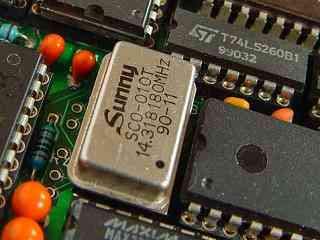

|
|
Turbo EPAC. By Lee Davison. |
|
How to.As it goes 8MHz is a bit pedestrian these days so to have a little fun I thought I'd see just how fast the EPAC could run.
The soldered in 8MHz oscillator was removed and replaced by a turned pin socket. There is only just enough room for this. Next a selection of oscillators was scrounged from the bits bins, all faster than the original, with speeds up to 32MHz.
Not much else to say really, some worked, others didn't. Here's the results.
Update.
Frequency Result Worked Worked Worked Uninitialized interrupt error(s) Not a thing At 16MHz all that happened was a constant stream of Uninitialized interrupt errors. At this point I didn't know what was causing that but found out later. See the update below.
I've left the 14.318MHz oscillator installed and it's been working for over a week now. The BIOS has been modified for the faster clock, this is only needed to make the system time run correctly and is just one longword that needs changing.
I found out what was causing the 'Uninitialized interrupt error' messages and fixed it, I can now run the EPAC reliably at 16MHz though 19 MHz is still no go. For details on the fix go see the flash ROM page.
| Last page update: 20th March, 2006. | e-mail me
 |